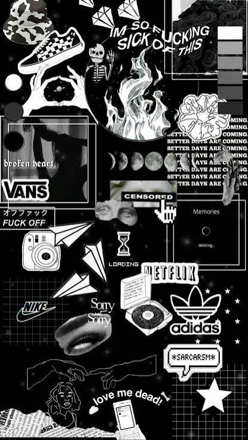

Mockup web dengan Word merupakan proses membuat rancangan awal tampilan website menggunakan Microsoft Word. Rancangan ini mencakup tata letak halaman, seperti header, menu navigasi, area artikel, gambar, sidebar, dan footer. Mockup digunakan sebagai panduan sebelum website dibuat menggunakan HTML dan CSS agar struktur serta tampilannya lebih teratur dan sesuai dengan kebutuhan.
Kembali